Edição especial · Projeto de extensãoUnipar · Novembro de 2026
A Rotina Universitária
Pesquisa de campo sobre hábitos, saúde e vida acadêmica
Reportagem especial
Entre aulas, trabalho e prazos, como vive o universitário?
Uma pesquisa de campo ouviu universitários e ex-universitários sobre alimentação, atividade física, saúde mental e vida social — e submeteu os resultados à análise de especialistas.
Projeto de extensão · Engenharia de Software, Unipar
Estudar, trabalhar e manter a vida pessoal em dia faz parte do cotidiano de muitos acadêmicos. Essa rotina intensa costuma favorecer hábitos práticos, mas nem sempre saudáveis ou recomendáveis: refeições irregulares, pouco sono, sedentarismo e sobrecarga mental.
Por isso, um grupo de estudantes desenvolveu este projeto acadêmico: uma pesquisa de campo aplicada a universitários e ex-universitários, para compreender como estão a rotina e os hábitos da vida acadêmica.
Os resultados são analisados por um nutricionista e por um educador físico e colocados em contexto com pesquisas feitas no Brasil e em outros países, compondo um panorama do cenário universitário.
“Rotina intensa, hábitos práticos mas nem sempre saudáveis.”
Nesta reportagem
01
Alimentação
Frequência das refeições, qualidade da dieta e acompanhamento nutricional.
02
Saúde física
Atividade física, horas de sono e acompanhamento médico.
03
Saúde mental
Sobrecarga, estresse e o impacto da rotina no bem-estar emocional.
04
Vida social
Equilíbrio entre trabalho, estudos e tempo para as relações pessoais.
Como apuramos
Etapa 1
Pesquisa de campo
Questionário online aplicado a universitários e ex-universitários, com perguntas curtas e objetivas.
Etapa 2
Análise de especialistas
Um nutricionista e um educador físico comentam criticamente os resultados encontrados.
Etapa 3
Contexto e recomendações
Pesquisas de outras regiões e países dão contexto ao tema, e orientações gerais de hábitos saudáveis fecham a reportagem.
Opinião dos especialistas
O que dizem os profissionais sobre os resultados
Um nutricionista e um educador físico interpretam os dados e trazem uma visão crítica sobre a rotina dos universitários.
Maycon Souza, nutricionista
Nutrição
Maycon Souza
Nutricionista
“Pequenas mudanças graduais, com orientação de um profissional de saúde quando possível, costumam ser mais sustentáveis do que mudanças bruscas.”
Vida universitária: análise das respostas do formulário
Projeto da faculdade. Base: 42 respostas, das quais 28 de universitários atuais.
Esta análise descreve a rotina, a alimentação e o bem-estar de 28 universitários atuais que responderam ao formulário. Trata-se de um retrato do grupo, sem avaliar pessoas individualmente e sem diagnóstico de qualquer natureza. O que mais se destaca é a rotina intensa: 26 dos 28 (92,9%) conciliam o estudo com algum tipo de trabalho, e 23 (82,1%) dizem se sentir sobrecarregados sempre ou às vezes.
Em relação aos hábitos, o grupo apresenta pontos positivos e pontos que podem ser ajustados aos poucos. Metade bebe mais de 1,5 litro de água por dia, quase metade faz de 3 a 4 refeições diárias e 11 pessoas (47,8%) comem frutas todos os dias. Ao mesmo tempo, há espaço para ampliar a variedade de refeições, de frutas e de atividade física, e para cuidar do sono. Pequenas mudanças graduais, com orientação de um profissional de saúde quando possível, costumam ser mais sustentáveis do que mudanças bruscas.
Ver a análise completa, com 19 gráficos
Amostra e critérios
O formulário recebeu 42 respostas. Foram consideradas relevantes as 28 respostas de quem é universitário atualmente. As outras 14 (quem já foi universitário nos últimos cinco anos ou não é) aparecem apenas na comparação final. Os percentuais usam como base as respostas válidas de cada pergunta, indicadas por n em cada gráfico. Respostas em branco, "não sei informar" e "varia muito" ficaram fora da contagem da pergunta correspondente.
Os valores de referência citados ao longo do texto são orientações gerais para adultos saudáveis, usadas apenas para contextualizar os resultados. Cada pessoa tem necessidades próprias, e a avaliação individual cabe a um nutricionista ou a outro profissional de saúde.
Perfil do grupo
Mais da metade do grupo (15 pessoas, 53,6%) tem até 18 anos. As faixas de 19 a 22 anos (6 pessoas, 21,4%), 27 anos ou mais (4 pessoas, 14,3%) e 23 a 26 anos (3 pessoas, 10,7%) são menores, e por isso as comparações entre idades devem ser lidas com cautela.
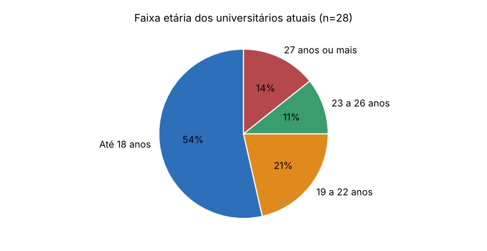
Gráfico 1. Faixa etária dos universitários atuais.
Quase todos trabalham: 20 (71,4%) em regime formal de segunda a sexta, 6 (21,4%) em outro formato, como meio período, informal ou freelancer, e 2 (7,1%) não trabalham. Essa combinação de estudo e trabalho influencia o tempo disponível para cozinhar, fazer pausas para comer e praticar atividade física.
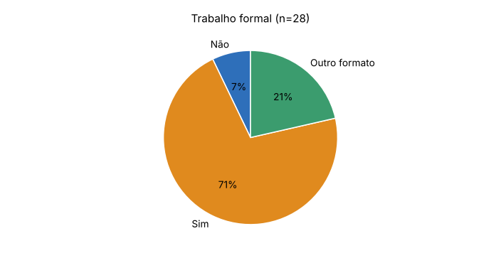
Gráfico 2. Trabalho formal entre os universitários atuais.
Alimentação
Refeições
As refeições diárias se dividem quase ao meio: 13 pessoas (46,4%) fazem de 1 a 2 refeições por dia e 14 (50,0%) fazem de 3 a 4. Uma pessoa faz 5 ou mais.
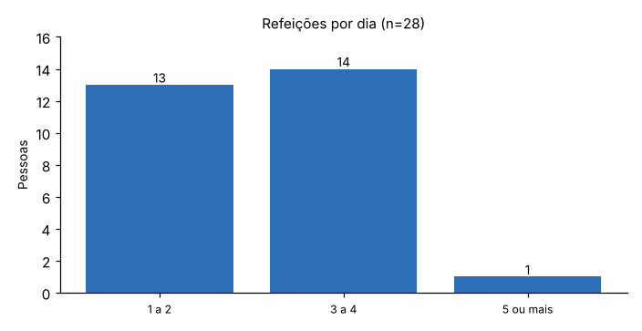
Gráfico 3. Refeições por dia.
Em geral, a orientação nutricional é distribuir a alimentação em refeições regulares ao longo do dia, o que ajuda a manter a energia e a concentração nos estudos. Quem tem pouco tempo pode se organizar com lanches simples e práticos entre as refeições principais, como frutas, iogurte, castanhas ou sanduíches com pão integral.
Alimentos ultraprocessados
Dos 24 que responderam, 4 (16,7%) dizem não consumir ultraprocessados, 15 (62,5%) consomem de 1 a 4 vezes por semana, 1 (4,2%) consome de 5 a 6 vezes e 4 (16,7%) consomem todos os dias.
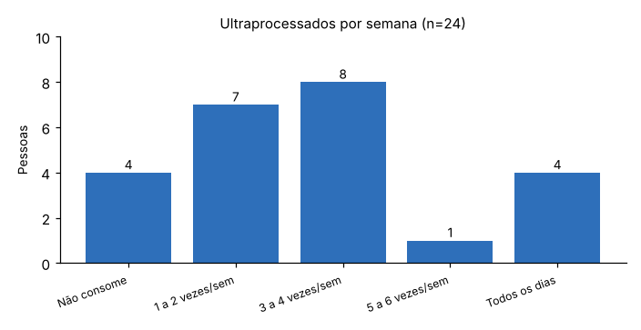
Gráfico 4. Frequência semanal de ultraprocessados.
Esses alimentos fazem parte da rotina de muita gente, sobretudo em dias corridos, e podem aparecer de vez em quando sem problema. A recomendação geral é dar preferência a alimentos in natura ou minimamente processados no dia a dia e reduzir os ultraprocessados de forma gradual, sem proibições, que costumam ser difíceis de manter.
Água e frutas
Na água, 11 de 22 (50,0%) bebem mais de 1,5 litro por dia, 4 (18,2%) bebem de 1 a 1,5 litro, 5 (22,7%) bebem de 500 ml a 1 litro e 2 (9,1%) bebem menos de 500 ml.
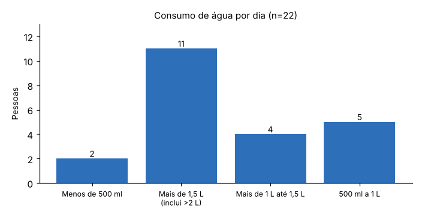
Gráfico 5. Consumo de água por dia.
A necessidade de água varia com o peso, o clima e a atividade física. Manter uma garrafa por perto e beber ao longo do dia é uma forma simples de se hidratar, e chás sem açúcar e alimentos ricos em água, como frutas e verduras, também ajudam.
Entre os 23 que responderam sobre frutas, 11 (47,8%) comem diariamente e 12 (52,2%) comem raramente ou não comem. Entre os 15 que informaram a quantidade, 7 (46,7%) comem 1 porção por dia, 6 (40,0%) comem 2 porções e 2 (13,3%) comem 3 ou mais.
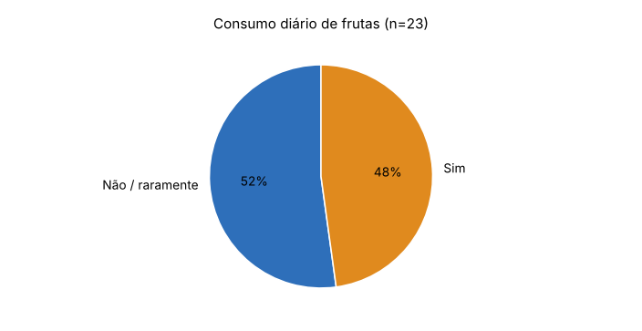
Gráfico 6. Consumo diário de frutas.
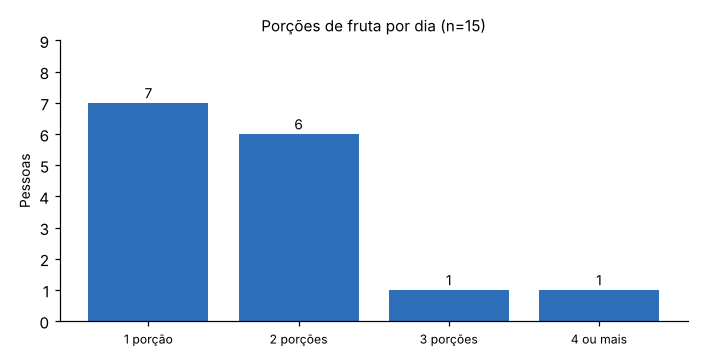
Gráfico 7. Porções de fruta por dia.
As diretrizes alimentares costumam sugerir frutas, legumes e verduras ao longo do dia, em variedade e conforme a rotina e o orçamento de cada um. Frutas da estação costumam ser mais acessíveis, e uma fruta junto ao café da manhã ou ao lanche já contribui.
Cantina
Dos 23 que responderam, 4 (17,4%) não consomem produtos da cantina, 5 (21,7%) consomem 1 item, 7 (30,4%) consomem de 2 a 3 itens e 7 (30,4%) consomem 4 itens ou mais, entre salgados, doces, bolachas, refrigerantes, energéticos e café.
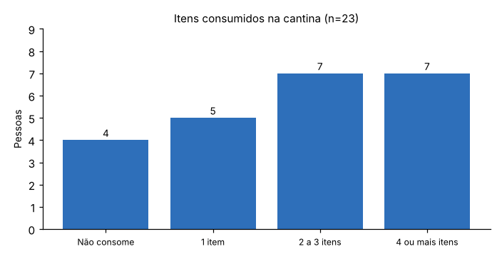
Gráfico 8. Número de itens consumidos na cantina.
A cantina é prática para quem tem a rotina cheia. Variar as escolhas, incluindo opções como frutas, sanduíches naturais, iogurtes e água, e levar um lanche de casa em alguns dias são formas de equilibrar sem abrir mão da praticidade.
Saúde e atividade física
Acompanhamento de saúde
Entre os 28, 11 (39,3%) nunca fizeram acompanhamento médico ou nutricional, 12 (42,9%) já fizeram sem manter a recorrência e 5 (17,9%) acompanham regularmente.
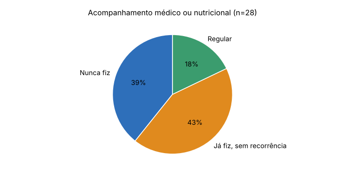
Gráfico 9. Acompanhamento médico ou nutricional.
Consultas de rotina permitem acompanhar a saúde de forma preventiva e receber orientações adaptadas a cada pessoa. Para estudantes, vale lembrar que há atendimento nutricional e médico em serviços públicos e, em algumas instituições, em clínicas-escola.
Atividade física
Entre 23 respostas válidas, 7 pessoas (30,4%) não praticam atividade física, 8 (34,8%) praticam de 1 a 2 vezes por semana e 8 (34,8%) praticam 3 vezes por semana ou mais. A duração informada se concentra entre 30 minutos e 2 horas (17 de 26 respostas, 65,4%), e 6 pessoas (23,1%) fazem sessões de menos de 30 minutos. Algumas respostas de duração vêm de pessoas que marcaram não praticar atividade física, então esse gráfico deve ser lido com cautela.
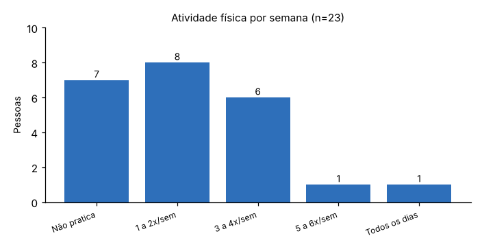
Gráfico 10. Atividade física por semana.
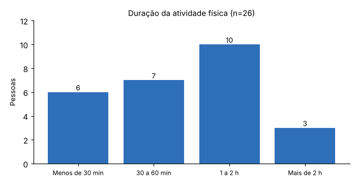
Gráfico 11. Duração média da atividade física.
Como referência geral, a Organização Mundial da Saúde sugere para adultos cerca de 150 minutos de atividade moderada por semana. Isso pode ser alcançado aos poucos, com caminhadas, uso de escadas e sessões curtas de 10 a 20 minutos distribuídas ao longo da semana. Quem está começando deve ir no seu ritmo e, se possível, contar com a orientação de um profissional de educação física.
Sono e tempo livre
Entre os 28, 14 (50,0%) dormem até 6 horas por noite (5 com menos de 5 horas, 5 com 4 a 6 horas e 4 com 5 a 6 horas), 13 (46,4%) dormem de 6 a 8 horas e 1 dorme mais de 8 horas. As faixas de 4 a 6 e de 5 a 6 horas se sobrepõem no formulário, o que limita a precisão dessa leitura.
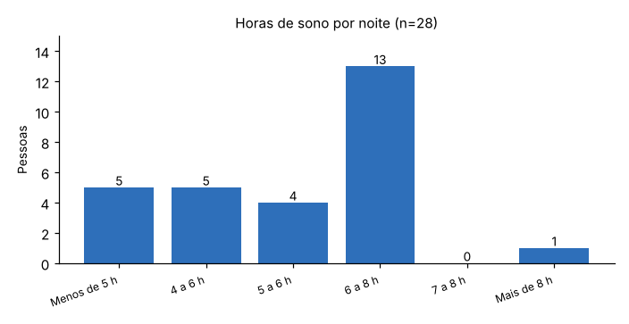
Gráfico 12. Horas de sono por noite.
Em geral, adultos se beneficiam de 7 a 9 horas de sono, e o sono tem relação com o apetite, a energia e o humor. Horários regulares, menos telas antes de dormir e evitar cafeína no fim do dia ajudam, embora nem sempre seja possível com uma rotina de trabalho e estudo.
Sobre o tempo livre, 14 dos 28 respondentes disseram que ele varia muito de um dia para o outro. Entre os 14 que deram um valor, 10 (71,4%) têm no máximo 2 horas livres por dia.
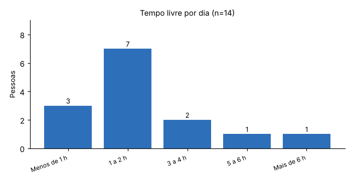
Gráfico 13. Tempo livre por dia (exclui quem respondeu que varia).
Reservar pequenos momentos de descanso e de lazer no dia, mesmo curtos, faz parte do cuidado com a saúde.
Rotina e bem-estar emocional
Dos 28 universitários atuais, 18 (64,3%) se consideram sobrecarregados, 5 (17,9%) se sentem assim às vezes e 5 (17,9%) não se sentem.
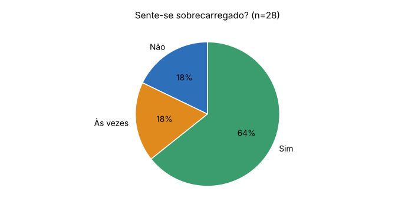
Gráfico 14. Percepção de sobrecarga.
Os desafios mais citados para conciliar trabalho, estudo e vida social são o cansaço (12 pessoas, 42,9%) e a falta de tempo (10 pessoas, 35,7%). Duas pessoas (7,1%) marcaram todas as opções, uma (3,6%) apontou a pressão financeira e três (10,7%) deram outras respostas.
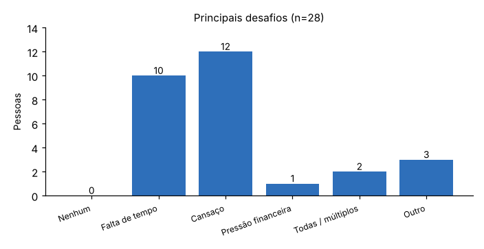
Gráfico 15. Principais desafios para conciliar trabalho, estudos e vida social.
Sobre o estado emocional, 14 de 27 (51,9%) dizem que a rotina interfere bastante, 9 (33,3%) dizem que interfere um pouco e 4 (14,8%) dizem que não interfere.
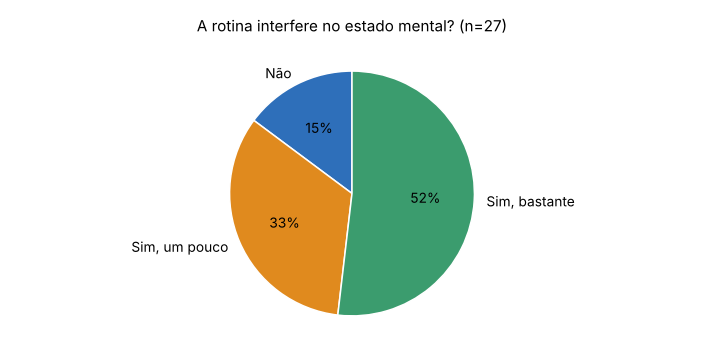
Gráfico 16. A rotina interfere no estado mental ou emocional?
Entre os 24 que descreveram a forma dessa interferência, a ansiedade foi a mais citada (7 respostas, 29,2%). Estresse, cansaço excessivo e dificuldade de concentração aparecem com 5 respostas cada (20,8%).
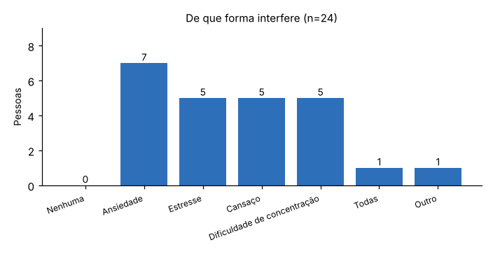
Gráfico 17. Forma como a rotina interfere no estado mental.
Apenas 6 pessoas responderam por que não se exercitam ou não se alimentam como gostariam: 4 citaram falta de motivação ou interesse e 2 deram outros motivos. Como são poucas respostas, o resultado serve só como indício.
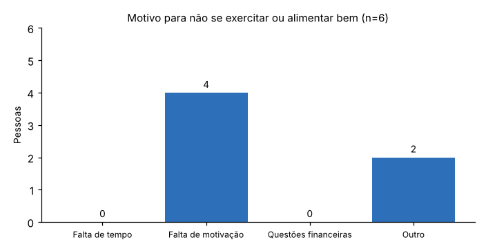
Gráfico 18. Motivo para não se exercitar ou alimentar bem.
Sentir cansaço e ansiedade em períodos de muita demanda é comum e não significa um problema de saúde por si só. A alimentação, o sono e o movimento contribuem para o bem-estar, mas não substituem o apoio profissional. Se esses sentimentos forem frequentes ou atrapalharem o dia a dia, conversar com um profissional de saúde ou com o serviço de apoio da instituição pode ajudar.
Cruzamentos entre respostas
Os cruzamentos abaixo são contagens simples. Mostram associações observadas neste grupo e não indicam que uma resposta cause a outra.
Sono e sobrecarga: as 5 pessoas que não se sentem sobrecarregadas dormem de 6 a 8 horas. Entre as 18 que se sentem sobrecarregadas, 13 (72,2%) dormem até 6 horas.
Sono e bem-estar emocional: das 13 pessoas que dormem até 6 horas, 10 (76,9%) dizem que a rotina interfere bastante no estado emocional. Entre as 13 que dormem de 6 a 8 horas, são 3 (23,1%).
Trabalho e sobrecarga: 15 das 20 pessoas com trabalho formal (75,0%) se dizem sobrecarregadas, contra 3 das 8 que trabalham em outro formato ou não trabalham (37,5%).
Idade e sobrecarga: 11 das 15 pessoas de até 18 anos (73,3%) se dizem sobrecarregadas, contra 2 das 6 de 19 a 22 anos (33,3%). As demais faixas têm de 3 a 4 pessoas e não permitem comparação segura.
Atividade física e sobrecarga: 6 das 7 pessoas que não praticam atividade física (85,7%) se dizem sobrecarregadas, mas entre quem pratica 3 vezes por semana ou mais a proporção também é alta (5 de 8). Os dados não mostram uma relação clara.
Universitários atuais e demais respondentes
As 14 respostas de quem não é universitário atual servem de referência. Entre elas, 6 de 14 (42,9%) se dizem sobrecarregadas, contra 64,3% dos universitários atuais. A resposta "bastante" para a interferência da rotina aparece em 5 de 13 (38,5%), contra 51,9%. Dormir até 6 horas é a realidade de 3 de 14 (21,4%), contra 50,0%, e 1 de 13 (7,7%) não pratica atividade física, contra 30,4%. O grupo de comparação é pequeno e inclui pessoas que já passaram pela faculdade, então a diferença é uma tendência a ser verificada e não um resultado firme.
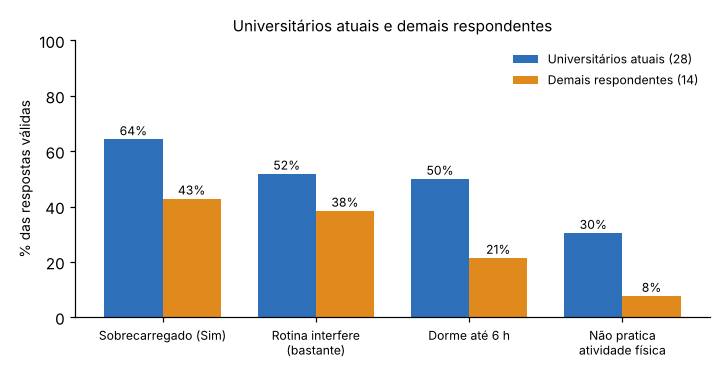
Gráfico 19. Comparação entre universitários atuais e demais respondentes.
Considerações finais
A rotina de quem estuda e trabalha é intensa, e a sensação de sobrecarga é comum no grupo. Reconhecer isso é o primeiro passo para organizar o tempo e pedir apoio quando necessário.
Há hábitos positivos no grupo, como o consumo de água e a presença de frutas na rotina de parte dos respondentes, que podem servir de base para novas melhorias.
Ajustes pequenos e graduais costumam funcionar melhor: manter refeições regulares, incluir uma fruta a mais por dia, variar as escolhas na cantina, se mexer um pouco mais e proteger o horário de sono.
O acompanhamento com nutricionista e outros profissionais de saúde permite orientações adequadas a cada pessoa. Ações de apoio na instituição, como rodas de conversa e ambientes de descanso, também podem ajudar.
Limitações
A amostra tem 28 universitários atuais, 15 deles com até 18 anos, e foi obtida sem sorteio. Os resultados descrevem este grupo.
As respostas são autodeclaradas, e várias perguntas têm poucas respostas válidas (frutas, água, tempo livre e motivos).
Na codificação, a faixa de água "mais de 1,5 L até 2 L" foi agrupada com "mais de 2 L". As faixas de sono se sobrepõem no formulário.
Três colunas sem cabeçalho na planilha original foram deixadas de fora.
Esta análise é descritiva e não substitui a avaliação individual por nutricionista ou outro profissional de saúde.
“O segredo está em começar de forma gradual, respeitando as limitações individuais e transformando o movimento em parte da rotina diária.”
Cuidados físicos para estudantes que trabalham e mantêm uma rotina sedentária
A combinação entre trabalho, estudos e longos períodos sentados é uma realidade para muitos estudantes. Essa rotina pode favorecer dores musculares, fadiga, aumento do estresse, redução da disposição e maior risco para doenças crônicas. A boa notícia é que pequenas mudanças graduais podem trazer benefícios significativos para a saúde física e mental.
Ver os 10 passos
Fazer uma autoavaliação
Há quanto tempo estou sedentário?
Possuo alguma limitação física ou condição de saúde?
Quanto tempo consigo dedicar semanalmente às atividades?
Começar com metas realistas
Semana 1 e 2: 15 a 20 minutos de caminhada, 3 vezes por semana.
Semana 3 e 4: 25 a 30 minutos, 4 vezes por semana.
A partir da semana 5: progressão gradual até atingir as recomendações semanais.
Aproveitar os deslocamentos diários
Utilizar escadas em vez do elevador.
Caminhar pequenos trajetos.
Estacionar mais longe do destino.
Descer alguns pontos antes do transporte habitual.
Fazer pausas ativas durante os estudos
Levantar a cada 50 ou 60 minutos.
Caminhar por 2 a 5 minutos.
Alongar pescoço, ombros, coluna e pernas.
Incluir exercícios de fortalecimento muscular
Agachamentos.
Flexões adaptadas.
Prancha abdominal.
Exercícios com elásticos.
Musculação.
Priorizar alongamento e mobilidade
5 a 10 minutos de alongamento diário.
Exercícios de mobilidade articular.
Yoga ou pilates como complemento.
Cuidar da hidratação
Manter uma garrafa de água por perto.
Beber água regularmente ao longo do dia.
Melhorar a qualidade do sono
Manter horários regulares para dormir.
Buscar entre 7 e 9 horas de sono por noite.
Escolher atividades prazerosas
Caminhada, corrida, dança, musculação, ciclismo, natação ou esportes recreativos.
Monitorar a evolução
Número de treinos por semana.
Tempo de atividade física.
Qualidade do sono.
Redução de dores e desconfortos.
Considerações finais. Para estudantes que conciliam trabalho e estudo, a atividade física deve ser vista como uma ferramenta para melhorar a saúde, a produtividade e a qualidade de vida. O segredo está em começar de forma gradual, respeitando as limitações individuais e transformando o movimento em parte da rotina diária.
Conciliar estudo, trabalho e cuidados pessoais é um desafio para muitos estudantes. Quatro pesquisas feitas em outras regiões do Brasil e em outros países ajudam a entender esse cenário.
Brasil · 2018
83,5%
relataram alguma dificuldade emocional que interferia na vida acadêmica
Ansiedade: 63,6%
Desânimo ou desmotivação: 45,6%
Insônia ou alterações no sono: 32,7%
Média de 3,5 refeições por dia; 12,5% faziam apenas duas
29,9% trabalhavam; entre os que trabalhavam, mais da metade tinha dificuldade de conciliar trabalho e estudo
Fonte: V Pesquisa Nacional de Perfil Socioeconômico e Cultural dos Graduandos (ANDIFES/FONAPRACE), com 424.128 questionários validados. Coleta em 2018, relatório publicado em 2019.
Brasil · Calouros
54,4%
apresentaram sintomas de depressão
Entre quem tem hábitos menos saudáveis, o risco é três vezes maior
42,3% com estilo de vida positivo, 44% com perfil de risco e 13,7% com hábitos mistos
Fonte: projeto Unilife-M, com 6.371 calouros de 12 universidades brasileiras, entre 16 e 35 anos. Divulgado pelo g1.
Estados Unidos · 2023
45,5%
dormiam menos de 7 horas por noite durante a semana
75,6% consumiam ao menos uma bebida açucarada por dia, em média
70,3% cumpriam as recomendações de atividade aeróbica
40,7% cumpriam as de atividade aeróbica e de fortalecimento muscular
15,8% tomaram bebida energética em pelo menos 5 dos últimos 30 dias
Fonte: American College Health Association, National College Health Assessment, com 18.755 estudantes de graduação. Coleta no outono de 2023, relatório de 2024.
18 países · 2017 a 2023
57,4%
tiveram rastreamento positivo para pelo menos um transtorno mental nos 12 meses anteriores
65,2% tiveram rastreamento positivo para algum transtorno ao longo da vida
72.288 estudantes de primeiro ano, de 77 universidades
Fonte: World Mental Health International College Student Initiative (WMH-ICS). Dados coletados entre 2017 e 2023, com publicação científica em 2025.
Guia rápido
Hábitos básicos para a rotina acadêmica
Orientações gerais de alimentação e de movimento para quem divide o dia entre estudo e trabalho.
Alimentação
Base: Guia Alimentar para a População Brasileira, do Ministério da Saúde.
Priorize alimentos naturais
Inclua frutas, verduras e legumes. Dê preferência a arroz, feijão, ovos, carnes, leite e outros alimentos pouco processados, variando ao longo da semana.
Reduza os ultraprocessados
Evite o consumo frequente de salgadinhos, biscoitos recheados, macarrão instantâneo, refrigerantes e embutidos. Prefira refeições feitas com ingredientes frescos.
Mantenha uma rotina alimentar
Evite longos períodos sem comer, estabeleça horários e procure não comer com pressa ou distraído pelo celular.
Beba água regularmente
Mantenha uma garrafa por perto durante as aulas e o trabalho, e prefira água a refrigerantes e bebidas açucaradas.
Planeje as refeições
Prepare com antecedência quando possível e leve frutas ou lanches de casa. Ao comer fora, monte refeições variadas.
Movimento e rotina
Base: orientações do educador físico Thiago Bertol.
Comece com metas realistas
Nas duas primeiras semanas, 15 a 20 minutos de caminhada, 3 vezes por semana. Depois, aumente aos poucos.
Aproveite os deslocamentos
Use as escadas em vez do elevador, caminhe pequenos trajetos e estacione mais longe do destino.
Faça pausas ativas
Levante a cada 50 ou 60 minutos de estudo, caminhe de 2 a 5 minutos e alongue pescoço, ombros, coluna e pernas.
Fortaleça e alongue
Inclua agachamentos, flexões adaptadas, prancha ou musculação, e reserve de 5 a 10 minutos diários para alongar.
Cuide do sono
Mantenha horários regulares e busque entre 7 e 9 horas de sono por noite.